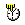

|

計時器
(Timer component)

共同屬性 (common properties)
版面 (face)
計時器屬性 (Timer properties)
事件 (event)
動態更改每隔幾毫秒啟動
(dynamically change 'Every milli-second' trigger)
運算式屬性存取
(formula get/set properties)
計時器元件
(Timer component) 是多執行緒的元件 (multi-thread component)，除了顯示目前日期時間外，依設計師啟動事件時機
(trigger) 的規劃，以獨立的背景執行緒 (background tread)
執行事件流程。啟動事件的時機 (trigger) 可以規劃為每隔幾毫秒
(every milli-second)、每天的 (every day at)、每月的 (every month at)、當條件為真
(when condition is
true) 。
版面 (Face)
-
Date Time 樣板 (display pattern)：計時器顯示的日期時間格式。
-
水平 (horizontal position)：顯示的日期時間水平位置。
-
頭 (leading)：
-
左 (left)：
-
中 (center)：
-
右 (right)：
-
尾 (trailing)：
-
垂直 (vertical position)：顯示的日期時間垂直位置。
-
上 (top)：
-
中 (center)：
-
下 (bottom)：
▲Top
計時器屬性
(Timer properties)
▲Top
事件
(event)
-
動作事件 (action event)：當計時器
(Timer) 設定的條件成立時，即引發事件。
-
雙擊事件 (double click event)：當在元件內雙擊滑鼠的左鍵時，即引發事件。
-
按右鍵事件 (right click event)：當在元件內按下滑鼠右鍵時，即引發事件。
-
初始觸發 (initial firing)：當設定觸發時機為【每隔幾毫秒
(every milli-second)】啟動事件的屬性，計時器初始化時是否隨即觸發事件，之後再每隔幾毫秒
(every milli-second) 啟動事件。
▲Top
動態更改每隔幾毫秒啟動
(dynamically change 'Every milli-second' trigger)
應用程式執行期
(runtime)，設計師可以用運算式事件 (formula)
，動態設定每隔幾毫秒啟動事件，亦可暫停或重啟事件的啟動。
-
SetProp("計時器元件名稱",
"delay", 毫秒數)： 重設每隔幾毫秒啟動。
-
SetProp("計時器元件名稱",
"enabled", 0)： 暫停事件啟動。
-
SetProp("計時器元件名稱",
"enabled", 1)： 重啟事件啟動。
▲Top
運算式屬性存取
(formula get/set properties)
SetProp("元件名稱",
"屬性", 值) ：屬性設定。
SetProp("元件名稱",
"屬性", 值1, 值2)：屬性設定。
GetProp("元件名稱",
"屬性")：屬性讀取。
| Set
Properties |
| 屬性
(Properties) |
值1
(Value 1) |
值2
(Value 2) |
說明 (Descriptions) |
| enabled |
1 致能，0 失效 |
|
致能與失效。 |
| setfocus |
1 設定 Focus |
|
設定 Focus。 |
| visible |
1 顯示，0 隱藏 |
|
顯示與隱藏。 |
| repaint |
1 重繪，2
立即重繪 |
|
重繪。 |
| revalidate |
1 |
|
元件重整。 |
| delay |
N 每隔幾 N 毫秒 |
|
重設每隔幾 N
毫秒啟動事件。 |
| time |
yyyyMMddHHmmss |
|
重設時間。 |
| bg |
RGB(red, green, blue) |
|
背景顏色。值1 必須以Formula 的 RGB() 運算式給值。
|
| fg |
RGB(red, green, blue) |
|
前景顏色。值1 必須以Formula 的 RGB() 運算式給值。
|
| x |
正整數值 |
|
左座標位置。 |
| y |
正整數值 |
|
上座標位置。 |
| w |
正整數值 |
|
元件寬度。 |
| h |
正整數值 |
|
元件高度。 |
| xy |
正整數值 |
正整數值 |
左(Value1) 上(Value2) 座標位置。 |
| wh |
正整數值 |
正整數值 |
元件寬(Value1) 高(value2)度。 |
| Get
Properties |
| 屬性
(Properties) |
傳回值
(Return value) |
說明 (Descriptions) |
| isenabled |
1 致能，0 失效 |
致能與失效。 |
| isvisible |
1 顯示，0 隱藏 |
顯示與隱藏。 |
| time |
yyyyMMddHHmmss |
讀取時間。 |
| x |
整數值 |
左座標位置。 |
| y |
整數值 |
上座標位置。 |
| w |
整數值 |
元件寬度。 |
| h |
整數值 |
元件高度。 |
▲Top
Copyright © 2001~
2004 Probe Technology . All Rights Reserved.
Questions, comments,
and suggestions to Service@probe.com.tw
|